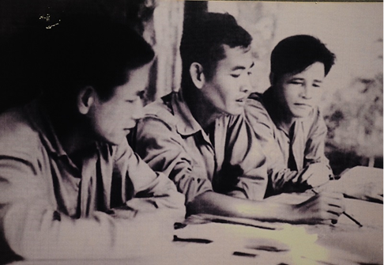

TRẬN NÚI THÀNH
Tại Quân khu 5, vào đêm 25 rạng ngày 26-5-1965, Đại đội 2 bộ đội địa phương Quảng Nam và phân đội đặc công V16,
tiến công tiêu diệt Đại đội 2, Tiểu đoàn 2, Lữ đoàn 9, Sư đoàn 3 lính thủy đánh bộ Mỹ tại Núi Thành. Trận Núi Thành
tuy quy mô nhỏ nhưng có ý nghĩa chính trị và quân sự rất lớn, là trận phủ đầu quân Mỹ; góp phần củng cố niềm tin,
nâng cao quyết tâm, xóa tan tâm lý gờm sợ quân Mỹ trong một bộ phận cán bộ, đảng viên, chiến sĩ và nhân dân ta.


Sau thắng lợi của trận Núi Thành, xuất hiện khẩu hiệu “Tìm Mỹ mà đánh, gặp Mỹ là diệt”,
góp phần phát động tinh thần dám đánh, quyết đánh, quyết đánh thắng quân Mỹ.
Đầu năm 1948, thực dân Pháp tăng cường thủ đoạn đánh phá, càn quét, tổ chức, duy trì hệ thống kìm kẹp,
gây tổn thất nghiêm trọng cho phong trào cách mạng ở địa bàn Liên khu 4. Để tháo gỡ khó khăn, Trung ương
Đảng quyết định giao đồng chí Nguyễn Chí Thanh giữ chức Bí thư Liên khu ủy Khu 4. Với kinh nghiệm tích luỹ
trong quá trình lãnh đạo phong trào kháng chiến ở Thừa Thiên, Bình - Trị - Thiên, Nguyễn Chí Thanh đã vận dụng
sáng tạo đường lối chủ trương của Đảng, cùng tập thể Liên khu ủy tiếp tục đẩy mạnh chiến tranh du kích, chiến tranh
nhân dân, đưa “Bình - Trị - Thiên khói lửa” chuyển mình thành “Bình - Trị - Thiên quật khởi”, trở thành một chiến trường sôi động,
có phong trào chiến tranh du kích phát triển mạnh mẽ, góp phần chia lửa, thu hút giam chân địch và tạo thế chiến lược cho chiến trường cả nước.